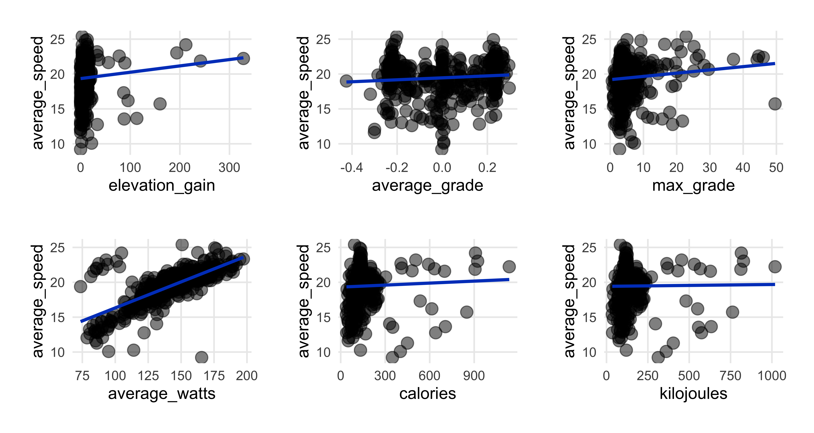
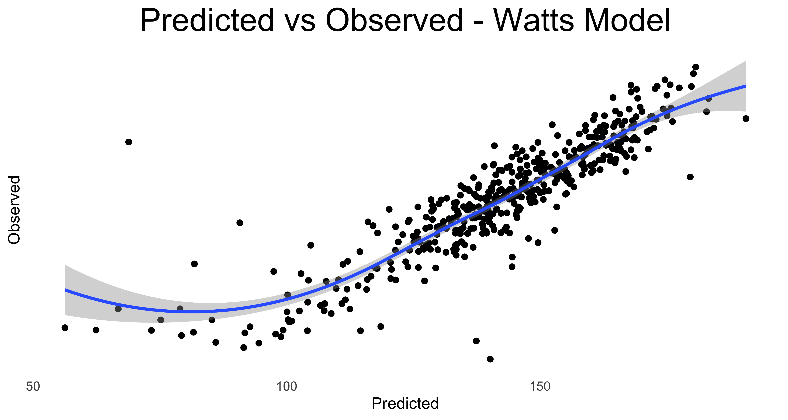

library(tidyverse) # to do tidyverse things
library(tidylog) # to get a log of what's happening to the data
library(janitor) # tools for data cleaning
# EDA tools
library(skimr)
library(DataExplorer)
# analysis tools
library(gt) # for making tables
library(ggtext) # to help make ggplot text look good
library(patchwork) # to combine plots
library(modelsummary) # for regression outputsIntroduction
I like playing with data and I like riding bikes, so here’s a post (my longest yet, I think) where I look at my own cycling data from the Strava app. I’ve used Strava since 2019. In San Francisco I mostly did workout rides, though there was a period where I rode to work once or twice a week. Since I knew I’d be riding just about everywhere here in Denmark, I made sure to track every ride this year, not just workouts, so I’d have a complete record of rides in 2023 and could see how many rides and kilometers I’d do in a year of riding like a Dane.
So let’s explore my year of riding Danishly. We’ll cover how to get data, what you need to do to clean it, and do some quick analysis. In putting this together I learned a bunch of new things, which I’ll explain in more detail as I go. These new things include:
- Getting data from my profile section on the Strava webpage and from the Strava API via the
rStravapackage. - Getting
gttables to render next to each other by using div classes to create columns. - Using functional programming to make it a bit easier to render multiple plots.
- Using a
{. ->> tmp}call to pipe in a temporary dataframe within a data transformation -> ggplot sequence, and callrm(tmp)to remove it from the workflow. - Using the
modelsummaryandcarpackages to visualize regression model output and plot predicted vs observed values.
But first…
My Life with Bikes
Ever since I was a young boy I’ve loved riding bicycles. My first bike was a birthday present when I was 8 or 9 years old…a yellow and black road runner bike with a banana seat, coaster brakes, similar to this one here. I rode that thing for many years. In 10th grade I saved money from various jobs to get a Panasonic 12-speed. I rode that through grad school, and for some reason didn’t take it with me when I moved cities for work. Though it likely would have been the bike that got stolen instead of the bike I bought after the move.
In San Francisco I bought the used red Univega road bike pictured at the top, and loved that so much I had it shipped on our moves to France and then here to Denmark.
Among the many things I was looking forward to when moving back to Copenhagen was finally living in a city with great bicycle infrastructure and culture. After all, US bicycle advocacy organizations like the SF Bike Coalition constantly use Copenhagen and Amsterdam as model cities when pushing for improvements to cycling infrastructure. San Francisco is good, but bike infrastructure here in Denmark has much better support from the government, leading to a much more deeply ingrained bike culture.
According to statistics compiled by Visit Denmark via the Copenhagen Municipality, The Cycling Embassy of Denmark, DTU Center for Transport Analytics and The Ministry of Transportation, Copenhagen has more than 380 km of bike lanes. The average Copenhagener cycles 3 km per day, and combined, all Danish cyclists ride over 8 million km per year.
Despite the good bike culture here, theft is a thing, especially for decent road bikes. So to prevent theft and the Univega from getting beat up by riding it everywhere everyday, soon after getting settled I got a basic commuter bike to go with the Univega. I found this refursbished beauty at Buddah Bikes in Nørrebro.
From the end of January on, I rode the commuter bike as often as I could…to work, Danish class, running errands, going to shows, visiting friends and family…even family who live 25km north of me. I also did a bunch of workout rides on the Univega, going all over Amager and points north and west. For the year, more than 440 rides.
The last ride of the year was quite eventful - on the tail end of a lovely workout ride that was supposed to be 60km, I was hit by a car about 8k from home. Result was a broken leg & shoulder. That meant two surgeries, two weeks in hospital, some physical therapy, and worst of all, no bike rides until at least this summer. On the bright side, socialized medicine FTW; I had excellent care and haven’t once have to haggle with an insurance company trying to deny treatment to boost profits. But that’s perhaps a subject for another post.
So anyway, let’s get on with it. The plan is:
- Pull the Data
- Show the code where I pulled the data from the API and cleaned it. It won’t run here and to see it you’ll need to un-fold it. I’ll be loading the data quietly for use in the analyses.
- EDA with DataExplorer
- Show and run code for exploratory analysis (EDA) using the
DataExplorerpackage.
- Show and run code for exploratory analysis (EDA) using the
- EDA with Automated Scatterplots
- Show and run code for EDA using Cedric Scherer’s tutorial on automating plots.
- Tables with
gt- Show and run code for the tables, including how to align
gttables next to each other.
- Show and run code for the tables, including how to align
- Create Charts to Describe My Ride Data
- Show and run the
ggplotcode to make some pretty charts.
- Show and run the
- Regression Models
- Run a few regression models to explain ride outcomes.
First we’ll load some packages…
Pull the Data
Strava offers an API to get data, but at first I thought it would be easier to request the my full archive via my user profile page and use the activity CSV and clean that up. That turned out to be a bit tricky because of how the dates and times were handled in the CSV.
A week or so after I downloaded the CSV I came across this Bluesky #TidyTuesday post where someone used the rStrava package to access the Strava API. This turned out to be much better for wrangling dates. It had most of the fields you get in the CSV, except for a few interesting ones including calories burned and the average and max grades. You can get them via the API but only when pulling individual activities. It was easy to merge the few fields I wanted from the CSV into the data collected from the API.
The code below shows the API pull (not the spreadsheet import) and how I cleaned it and added new fields. I used some of the exact same text in the rStrava vignette with regard to creating the httr-oauth file and the stoken file. For a more detailed explanation, go there.
Make sure also to read the Strava API guidelines and documentation for information on rate limits, the JSON structures and a data dictionary.
Show code for getting data via rStrava
### this section in a separate file called stoken.r
# create the access token
app_name <- 'myappname' # chosen by user
app_client_id <- 'myid' # an integer, assigned by Strava
app_secret <- 'xxxxxxxx' # an alphanumeric secret, assigned by Strava
# Setting cache = TRUE for strava_oauth will create an authentication file in the working directory.
stoken <- httr::config(token = strava_oauth(
app_name, app_client_id, app_secret, cache = TRUE, app_scope="activity:read_all"))
###
### Session to pull the data
# calling the `.httr-oauth` in the directory to create a session-specific token
stoken <- httr::config(token = readRDS('.httr-oauth')[[1]])
# this call shows up in the console with your Strava ID, name and any bio info you've entered.
myinfo <- get_athlete(stoken, id = 'my strava athlete id')
head(myinfo)
# pull the data
# this call pulls all the data into a large list
myact <- get_activity_list(stoken)
# convert the data into a dataframe and clean & mutate as needed
act_data <- compile_activities(myact) %>%
as_tibble() %>%
mutate(gear_name = case_when(
gear_id == "b6298198" ~ "Univega",
gear_id == "b11963967" ~ "Commute bike",
TRUE ~ "Not a bike ride")) %>%
mutate(activity_date = lubridate::as_datetime(start_date_local)) %>%
mutate(activity_date_p = as.Date(start_date_local)) %>%
mutate(activity_year = lubridate::year(start_date_local),
activity_month = lubridate::month(start_date_local),
activity_month_t = lubridate::month(start_date_local, label = TRUE, abbr = FALSE),
activity_day = lubridate::day(start_date_local),
activity_md = paste0(activity_month_t, " ", activity_day),
activity_wday = wday(activity_date_p, label = TRUE, abbr = FALSE),
activity_hour = lubridate::hour(activity_date),
activity_min = lubridate::minute(activity_date),
activity_hmt = paste0(activity_hour, ":", activity_min),
activity_hm = hm(activity_hmt),
moving_time_hms = hms::hms(moving_time),
elapsed_time_hms = hms::hms(elapsed_time)) %>%
mutate(location_country = case_when(
timezone == "(GMT+01:00) Europe/Copenhagen" ~ "Denmark",
timezone == "(GMT+01:00) Europe/Paris" ~ "France",
TRUE ~ "United States")) %>%
## random edits
mutate(commute = ifelse((activity_year == 2023 & activity_md == "June 14" & name == "Morning commute"),
TRUE, commute)) %>%
mutate(commute = ifelse((activity_year == 2023 & activity_md == "September 19" & name == "Afternoon commute"),
TRUE, commute)) %>%
mutate(commute = ifelse((activity_year == 2023 & activity_md == "October 5" & name == "Morning Ride"),
TRUE, commute)) %>%
mutate(name = ifelse((activity_year == 2023 & activity_md == "October 4" & name == "Morning Ride"),
"Morning commute", name)) %>%
mutate(name = ifelse((activity_year == 2023 & activity_md == "October 4" & name == "Evening Ride"),
"Evening commute", name)) %>%
mutate(name = ifelse((activity_year == 2023 & activity_md == "October 5" & name == "Morning Ride"),
"Morning commute", name)) %>%
mutate(name = ifelse(name == "Evening commmute", "Evening commute", name)) %>%
## adjust studieskolen vesterbro morning rides
mutate(name = case_when(
(activity_year == 2023 & (name == "Morning Ride" | name == "Rainy Morning Ride") &
activity_md %in% c("October 24", "October 26", "October 31", "November 2", "November 7",
"November 9", "November 14", "November 16", "November 21", "November 23",
"November 28", "November 30", "December 5", "December 7",
"December 12", "December 14"))
~ "To Studieskolen", TRUE ~ name)) %>%
# adjust studieskolen vesterbro afternoon rides
mutate(name = case_when(
(activity_year == 2023 & (name == "Lunch Ride" | name == "Afternoon Ride") &
activity_md %in% c("October 24", "October 26", "October 31", "November 7",
"November 9", "November 14", "November 16", "November 21", "November 23",
"November 30", "December 5", "December 12", "December 14"))
~ "From Studieskolen", TRUE ~ name)) %>%
mutate(name = ifelse((activity_year == 2023 & name == "From Studieskolen" &
activity_md %in% c("November 23", "December 14") & activity_hour > 13),
"Afternoon Ride", name)) %>%
## adjust studieskolen KVUC rides
mutate(name = case_when(
(activity_year == 2023 & name == "Afternoon Ride" &
activity_md %in% c("October 9", "October 11",
"October 23", "October 25", "October 30", "November 1",
"November 6", "November 8", "November 13", "November 15",
"November 20", "November 22", "November 27", "November 29",
"December 4", "December 6", "December 11", "December 13",
"December 20")) ~ "To Studieskolen KVUC",
TRUE ~ name)) %>%
mutate(name = case_when(
(activity_year == 2023 & name == "Evening Ride" &
activity_md %in% c("October 9", "October 11",
"October 23", "October 25", "October 30", "November 1",
"November 6", "November 8", "November 13", "November 15",
"November 20", "November 22", "November 27", "November 29",
"December 4", "December 6", "December 11", "December 13",
"December 20")) ~ "From Studieskolen KVUC",
TRUE ~ name)) %>%
mutate(name = ifelse(
(activity_year == 2023 & name == "To Studieskolen KVUC" & activity_md == "December 20" & activity_hour == 16),
"From Studieskolen KVUC", name)) %>%
mutate(name = ifelse((commute == "TRUE" & grepl("Ride", name)),
str_replace(name, "Ride", "commute"), name)) %>%
mutate(ride_type = case_when(
commute == "TRUE" ~ "Commute/Studieskolen",
name %in% c("To Studieskolen", "From Studieskolen",
"To Studieskolen KVUC", "From Studieskolen KVUC")
~ "Commute/Studieskolen",
gear_name == "Univega" ~ "Workout",
TRUE ~ "Other")) %>%
select(activity_id = id, activity_date:activity_wday, activity_hm, activity_hour, activity_min, timezone,
activity_name = name, ride_type, sport_type, commute, gear_name, gear_id, distance_km = distance,
moving_time_hms, moving_time, elapsed_time_hms, elapsed_time, average_speed, max_speed, average_watts, kilojoules,
elevation_high = elev_high, elevation_low = elev_low, elevation_gain = total_elevation_gain, location_country,
lat_start = start_latlng1, lng_start = start_latlng2, lat_end = end_latlng1, lng_end = end_latlng2)
## merge this with CSV data (activity_id, calories, average_grade, max_grade, average_elapsed_speed, elevation_loss) on the activity_id key to get the dataframe "strava_data"EDA with DataExplorer
Ok, we have some data, let’s see what it looks like. These two DataExplorer plots show (on the right) a general overview of the dataset…percent of observations missing, percent of discrete & continuous variables, etc and on the left, the percent missing for each variable.
To put them next to each other I’ve used a bootstrap css grid system to define the columns and place the plots there. I’ll use the css grids later for the gt tables. They won’t show in this rendered html doc, so go to the .qmd file to see how it works. The code is plot_intro(strava_data)

The main take-away here is that the average_elapsed_speed variable is missing 27% of observations, so we won’t bother with it in our analysis.
EDA with Correlations
Now for one of my favorite DataExplorer functions, plot_correlation to produce a correlation heatmap. The deeper the shade of red, the stronger the correlation.
So what do we see here?
Most of the relationships are positive, some with expectedly near 1:1 relationships, such as distance ridden and total time for the ride.
Average speed is positively correlated with distance but the relationship is only at 0.14, the weakest of all positive associations with distance. Average speed correlations are low…near 0, for total elevation gain and negative the higher the average grade of the ride.
Averge watts(i), or the power output for the ride, has mostly negative correlations. The longer the rides went in time or distance, the lower the average power per ride segment.
We’ll keep these correlations in mind when looking at the scatterplots and then later considering the regression results.
- Strava provides a weighted average watts for the entire ride
EDA with Scatterplots
While DataExplorer does have functionality for scatterplots, each call only allows for one comparison y-axis variable. I could do multiple calls within the package but I recently came across Cedric Scherer’s post on automating plot outputs using functional programming and wanted to give that approach a try, this project being perfect for a test. I ended up copying one of his scatterplot functions with no modification for use here. (I’m still a bit weak on functional programming so didn’t want to mess anything up and have to spend time debugging)
This first bit of code creates the plot function:
Show code for creating automated plot function
## plot template as function
plot_scatter_lm <- function(data, var1, var2, pointsize = 2, transparency = .5, color = "") {
## check if inputs are valid
if (!exists(substitute(data))) stop("data needs to be a data frame.")
if (!is.data.frame(data)) stop("data needs to be a data frame.")
if (!is.numeric(pull(data[var1]))) stop("Column var1 needs to be of type numeric, passed as string.")
if (!is.numeric(pull(data[var2]))) stop("Column var2 needs to be of type numeric, passed as string.")
if (!is.numeric(pointsize)) stop("pointsize needs to be of type numeric.")
if (!is.numeric(transparency)) stop("transparency needs to be of type numeric.")
if (color != "") { if (!color %in% names(data)) stop("Column color needs to be a column of data, passed as string.") }
g <-
ggplot(data, aes(x = !!sym(var1), y = !!sym(var2))) +
geom_point(aes(color = !!sym(color)), size = pointsize, alpha = transparency) +
geom_smooth(aes(color = !!sym(color), color = after_scale(prismatic::clr_darken(color, .3))),
method = "lm", se = FALSE) +
theme_minimal() +
theme(panel.grid.minor = element_blank(),
legend.position = "top")
if (color != "") {
if (is.numeric(pull(data[color]))) {
g <- g + scale_color_viridis_c(direction = -1, end = .85) +
guides(color = guide_colorbar(
barwidth = unit(12, "lines"), barheight = unit(.6, "lines"), title.position = "top"
))
} else {
g <- g + scale_color_brewer(palette = "Set2")
}
}
return(g)
}And here we call the plot_scatter_lm function. In this first instance I’m plotting some variables against ride distance.
## data extract
strava_activities_rides <- strava_data %>%
filter(activity_year == 2023)
## 1st plot call - distance as y axis
patchwork::wrap_plots(
map2(c("elapsed_time", "moving_time", "average_speed","average_watts", "calories", "kilojoules"),
c("distance_km", "distance_km", "distance_km", "distance_km", "distance_km", "distance_km"),
~plot_scatter_lm(data = strava_activities_rides, var1 = .x, var2 = .y, pointsize = 3.5) +
theme(plot.margin = margin(rep(15, 4)))))This first set of plots confirms what we saw in the correlation heatmap while also displaying how the ride data points are distributed. We see the positive and almost 1:1 relationships between distance and both time measures, elapsed and moving. Elapsed time is the total time from when you start the ride until you end and save it in the app. Moving time is Strava’s calculation of how much time you actually spent in motion. Strava provides ride time in seconds, which is best for this kind of plotting, and of course you can use lubridate to convert it to hours & minutes.
We also see the negative association with watts that we saw in the correlations. I’m making a note to take a closer look at how much an effect watts has later on in the regression section.
Note the outlier ride of 60km and an elapsed time of more than 15,000 seconds. That was the ride where I was hit by the car…the elapsed time ended up at 18,242 seconds, or more than 5 hours. Moving time was only 2 hours & 44 minutes. I guess turning off the app and saving the ride wasn’t top of my to-do list while laying on the street with broken bones.
This next group of plots has moving time as the comparison variable. I didn’t plot distance on the x-axis as we saw that relationship already.
show code for moving time scatterplots
patchwork::wrap_plots(
map2(c("average_speed", "elevation_gain", "average_grade", "average_watts", "calories", "kilojoules"),
c("moving_time", "moving_time", "moving_time", "moving_time", "moving_time", "moving_time"),
~plot_scatter_lm(data = strava_activities_rides, var1 = .x, var2 = .y, pointsize = 3.5) +
theme(plot.margin = margin(rep(15, 4)))))
We see average speed decreasing a bit as ride time goes up, which makes some sense.
We also see the longer rides had more elevation gain, though to be clear, there’s not much elevation to be gained here in Denmark…it’s a bit flat. But the longer workout rides tended to be to northern parts of Sjælland, where it can get a bit hilly at times. I tried adding ride_type as a color aesthetic for the plots and while I won’t display that here, it did confirm my suspicion that the longer rides up north were responsible for the relationship between ride time and elevation.
As expected I also expended more energy (calories & kilojoues) the more time I was riding.
Next we plot average speed in y axis, omitting distance and time, as we’ve already seen that relationship.
show code for average speed scatterplots
patchwork::wrap_plots(
map2(c("elevation_gain", "average_grade", "max_grade", "average_watts", "calories", "kilojoules"),
c("average_speed", "average_speed", "average_speed", "average_speed", "average_speed", "average_speed"),
~plot_scatter_lm(data = strava_activities_rides, var1 = .x, var2 = .y, pointsize = 3.5) +
theme(plot.margin = margin(rep(15, 4)))))
The strongest relationship is with watts, confirming what we saw in the correlation heatmap.
There’s an oddly slightly positive relationship with elevation, but I wonder if that’s a result of my longer workout rides to the northern part of Sjælland also having not only more elevation but also a bit more open road (especially in the early morning hours when I tend to ride) to ride faster. Again I ran it with ride_type as a color aesthetic which more or less confirmed my intuition.
I’m a bit surprised to see that energy output isn’t as positively associated with average speed, but perhaps here where it’s flat there’s only so high a level of energy burn I can get to.
And finally, kilojoules as the comparison variable. Why use kilojoules and not calories? Accoring to this Garmin FAQ, calories expended are total energy expended in the time it took to do the workout, while kilojoules is the energy burned by the workout. The formula for kilojoules is (watts x seconds) x 1000.
Since we’ve already plotted kilojoules against the distance, time, and speed, no need to repeat.
show code for kilojoule scatterplots
patchwork::wrap_plots(
map2(c("average_watts", "elevation_gain", "average_grade"),
c("kilojoules", "kilojoules", "kilojoules"),
~plot_scatter_lm(data = strava_activities_rides, var1 = .x, var2 = .y, pointsize = 3.5) +
theme(plot.margin = margin(rep(15, 4)))))Analysis Pt 1 - gt tables
Now that we have a broad overview of the data, let’s get a bit more specific, first with some tables using the gt package. To prep the data for the tables I created a summary-level subset of the data with means, medians, etc. No need to show that code, as it’s fairly basic.
First, a top-line summary:
Show code for summary table
sumtable %>%
select(rides, km_total, elev_total, time_total1, time_total2, cal_total, kiloj_total) %>%
gt() %>%
fmt_number(columns = c(km_total, elev_total, cal_total, kiloj_total), decimals = 0) %>%
cols_label(rides = "Total Rides", km_total = "Total Kilometers",
elev_total = md("Total Elevation *(meters)*"),
time_total1 = md("Total Time *(hours/min/sec)*"),
time_total2 = md("Total Time *(days/hours/min/sec)*"),
cal_total = "Total Calories", kiloj_total = "Total Kilojoules") %>%
cols_align(align = "center", columns = everything()) %>%
tab_style(
style = cell_text(align = "center"),
locations = cells_column_labels(
columns = c(rides, km_total, elev_total, time_total1, time_total2, cal_total, kiloj_total))) %>%
tab_header(title = md("My Year of Riding Danishly<br>*Ride Totals*"))| My Year of Riding Danishly Ride Totals |
||||||
|---|---|---|---|---|---|---|
| Total Rides | Total Kilometers | Total Elevation (meters) | Total Time (hours/min/sec) | Total Time (days/hours/min/sec) | Total Calories | Total Kilojoules |
| 446 | 2,562 | 5,372 | 133:26:42 | 5d 13H 26M 42S | 68,578 | 62,737 |
For the year, more than 440 rides covering 2,500 kilometers. I spent the equivalent of more than 5 days on the bike, and burned 60,000+ units of energy. Which means on average, every day I did 1.2 rides,and went about 7 km, a few km more than the average Copenhagener. (It occurs to me know that I didn’t make a count for how many days of the year I rode…an edit to come perhaps…)
I won’t be showing code for the rest of the tables, they’re very basic gt calls. Let’s see the ranges for distance, time, elevation gain, and energy expended.
| Ride Statistics - Distance (in km) | |||
|---|---|---|---|
| Average | Median | Shortest | Longest |
| 5.74 | 4.23 | 1.06 | 60.93 |
| Ride Statistics - Time | |||
|---|---|---|---|
| Average | Median | Shortest | Longest |
| 17M 57S | 12M 40S | 4M 23S | 2H 44M 26S |
| Ride Statistics - Elevation (meters) | |||
|---|---|---|---|
| Average | Median | Lowest | Highest |
| 12.04 | 8.35 | 0 | 328.1 |
| Ride Statistics - Energy | |||||
|---|---|---|---|---|---|
| Calories Burned | Kilojoules Burned | ||||
| Average | Least | Most | Average | Least | Most |
| 153.76 | 38.66 | 1136.32 | 140.67 | 34.7 | 1019.1 |
The rides spanned 1 km to 60 km, with the average & median ride around 4-5km, which makes sense given that my work commute was a bit over 4km and school rides between 4km - 6km. The elevation stats are what you’d expect for Denmark, and the average ride burned 140-150 units of energy.
Analysis Pt 2 Plots
Now onto some fun with ggplot2. We’ll see how the rides spread out across months, days of the week, and subsetted by type of ride. For type, I grouped all rides to work and Danish classes (at one of two Studieskolen campuses) into one group, workouts into another, and errands and other random rides into a third group.
These first two show by month and by type of ride. To put the charts side-by-side I used patchwork. For the rides by type, I used percentages for the bar and dynamic labelling to put the ride-by-type n in the x-axis label. This is where I used the {. ->> tmp} call to pass the temproary data thru to calls within the plot code. It’s a neat trick, just remember to call rm(tmp) to remove the temporary set from the environment.
Show code for charts by month and type
# by month
ridesplot1 <-
rides_mth_type %>%
distinct(activity_month_t, .keep_all = TRUE) %>%
select(activity_month_abbv, rides_by_month) %>%
ggplot(aes(activity_month_abbv, rides_by_month)) +
geom_col(fill = "#C8102E") +
geom_text(aes(label= rides_by_month),
color = "white", size = 5, vjust = 1.5) +
labs(x = "", y = "", title = "Spring & Summer Weather = More Rides",
subtitle = glue::glue("*Average Rides / Month = {round(mean(rides_mth_type$rides_by_month, 3))}*")) +
theme_minimal() +
theme(panel.grid = element_blank(), plot.title = element_text(hjust = 0.5),
plot.subtitle = element_markdown(hjust = 0.5),
axis.text.y = element_blank())
# by type
ridesplot2 <-
rides_mth_type %>%
select(ride_type, ride_type_n) %>%
group_by(ride_type) %>%
mutate(rides_by_type = sum(ride_type_n)) %>%
ungroup() %>%
select(-ride_type_n) %>%
distinct(rides_by_type, .keep_all = TRUE) %>%
mutate(ride_type_pct = rides_by_type / sum(rides_by_type)) %>%
{. ->> tmp} %>%
ggplot(aes(ride_type, ride_type_pct)) +
geom_col(fill = "#C8102E") +
scale_x_discrete(labels = paste0(tmp$ride_type, "<br>Total Rides = ", tmp$rides_by_type, "")) +
geom_text(data = subset(tmp, ride_type != "Workout"),
aes(label= scales::percent(round(ride_type_pct, 2))),
color = "white", size = 5, vjust = 1.5) +
geom_text(data = subset(tmp, ride_type == "Workout"),
aes(label= scales::percent(round(ride_type_pct, 2))),
color = "#C8102E", size = 5, vjust = -.5) +
labs(x = "", y = "", title = "Lots of Riding to Work or Danish Class") +
theme_minimal() +
theme(panel.grid = element_blank(), plot.title = element_text(hjust = 0.5),
axis.text.y = element_blank(), axis.text.x = element_markdown())
rm(tmp)
ridesplot1 + ridesplot2 
As the weather got better I ride more often. My work contract ended in early October and from them on it was 4 days a week to Danish classes. Those commute and school rides accounted for just about 70% of all my rides for the year.
Next let’s plot the percent of ride type by month…
Show code for ride-type-by-month chart
rides_mth_type %>%
ggplot(aes(activity_month_t, ride_type_pct, fill = ride_type)) +
geom_bar(stat = "identity") +
geom_text(data = subset(rides_mth_type, ride_type != "Workout"),
aes(label = scales::percent(round(ride_type_pct, 2))),
position = position_stack(vjust = 0.5),
color= "white", vjust = 1, size = 5) +
labs(x = "", y = "", title = "Most Rides Each Month Were Commutes to/from Work or Danish Class") +
scale_fill_manual(values = c("#0072B2", "#E69F00", "#CC79A7"),
labels = c("Commute/<br>Studieskolen", "Other", "Workout")) +
theme_minimal()+
theme(legend.position = "bottom", legend.spacing.x = unit(0, 'cm'),
legend.text = element_markdown(),
legend.key.width = unit(1.5, 'cm'), legend.title = element_blank(),
axis.text.y = element_blank(), plot.title = element_text(hjust = 0.5),
panel.grid.major = element_blank(), panel.grid.minor = element_blank()) +
guides(fill = guide_legend(label.position = "bottom"))A bit of a drop in the commute/school percentage after my work contract ended, but that’s expected.
The next two plots display by day of the week and ride type by day of the week. For overall rides by day, I again did the percentage for the bars and added the number of rides into the x-axis labels. Ride-type by day follows.
Show code for ride by day chart
# day of the week and type
strava_data %>%
filter(activity_year == 2023) %>%
group_by(activity_wday) %>%
summarise(rides_by_wday = n()) %>%
mutate(rides_wday_pct = rides_by_wday / sum(rides_by_wday)) %>%
mutate(rides_day_avg = round(mean(rides_by_wday), 0)) %>%
ungroup() %>%
mutate(total_rides = sum(rides_by_wday)) %>%
{. ->> tmp} %>%
ggplot(aes(activity_wday, rides_by_wday)) +
geom_col(fill = "#C8102E") +
scale_x_discrete(labels = paste0(tmp$activity_wday, "<br>Total Rides = ", tmp$rides_by_wday, "")) +
geom_text(aes(label = scales::percent(round(rides_wday_pct, 2))),
color = "white", size = 5, vjust = 1.5) +
labs(x = "", y = "", title = "More Rides on Weekdays, Especially Tues -> Thurs",
subtitle = glue::glue("*Total Rides = {tmp$total_rides} <br> Average Rides / Day of the Week = {tmp$rides_day_avg}*")) +
theme_minimal() +
theme(panel.grid = element_blank(), plot.title = element_text(hjust = 0.5),
plot.subtitle = element_markdown(hjust = 0.5),
axis.text.x = element_markdown(),
axis.text.y = element_blank())
Weekdays in general had the highest percentage of rides. Fridays had fewer rides because we tended to work-from-home on Fridays and when the work contract ended I did not have class on Fridays.
Show code for ride-type by day chart
strava_data %>%
filter(activity_year == 2023) %>%
group_by(activity_wday, ride_type) %>%
summarise(ride_type_n = n()) %>%
mutate(ride_type_pct = ride_type_n / sum(ride_type_n)) %>%
ungroup() %>%
ggplot(aes(activity_wday, ride_type_pct, fill = ride_type)) +
geom_bar(stat = "identity") +
geom_text(aes(label = scales::percent(round(ride_type_pct, 2))),
position = position_stack(vjust = 0.5),
color= "white", size = 5) +
labs(x = "", y = "", title = "Weekdays Were for Getting to/from Work & Danish Class",
subtitle = "Weekends for Errands and Workouts") +
scale_fill_manual(values = c("#0072B2", "#E69F00", "#CC79A7"),
labels = c("Commute/<br>Studieskolen", "Other", "Workout")) +
theme_minimal() +
theme(legend.position = "bottom", legend.spacing.x = unit(0, 'cm'),
legend.text = element_markdown(),
legend.key.width = unit(1.5, 'cm'), legend.title = element_blank(),
axis.text.y = element_blank(),
plot.title = element_text(hjust = 0.5),
plot.subtitle = element_text(hjust = 0.5, size = 14),
panel.grid.major = element_blank(), panel.grid.minor = element_blank()) +
guides(fill = guide_legend(label.position = "bottom"))I wanted to see what time of day I started my rides and wanted to display the data in the form of a clock rather than a bar chart. This explainer was helpful to get the visualisation to work, with just some minor tweaking to get the data labels showing correctly.
The first “clock” represents ride starts times by the hour of the day, in 24-hour format. The second shows which minutes of the hour were most common for starting a ride.
Show code for circular time plots
strava_data %>%
filter(activity_year == 2023) %>%
count(ride_type, activity_hour) %>%
{. ->> tmp} %>%
ggplot(aes(activity_hour, y = n, fill = ride_type)) +
geom_bar(stat = "identity") +
scale_x_continuous(limits = c(0, 24), breaks = seq(0, 24)) +
geom_text(data = subset(tmp, ride_type == "Commute/Studieskolen" & n > 20),
aes(label= n), color = "white", size = 4) +
coord_polar(start = 0) +
theme_minimal() +
scale_fill_manual(values = c("#0072B2", "#E69F00", "#CC79A7"),
labels = c("Commute/<br>Studieskolen", "Other", "Workout")) +
labs(x = "", y = "",
title = "Most Rides During Morning and Evening Commuting Hours",
subtitle = "*Numbers Correspond to Hour of Day on a 24 hr clock*") +
theme(legend.text = element_markdown(),
axis.text.y = element_blank(),
legend.title = element_blank(),
plot.title = element_text(size = 10, hjust = 0.5),
plot.subtitle = element_markdown(hjust = 0.5, size = 9))
Show code for circular time plots
rm(tmp)
activty_ampm %>%
ggplot(aes(activity_min, y = activity_min_n, fill = ampm)) +
geom_col(position = position_stack(reverse = TRUE)) +
scale_x_continuous(limits = c(-1, 60), breaks = seq(0, 59), labels = seq(0, 59)) +
geom_text(data = subset(activty_ampm, activity_min_n > 5),
aes(label= activity_min_n), color = "white", size = 4, position = position_nudge(y = -1)) +
coord_polar(start = 0) +
theme_minimal() +
scale_fill_manual(values = c("#E57A77", "#7CA1CC"),
labels = c("AM", "PM")) +
labs(x = "", y = "",
title = "Most Morning Rides Started Between 12 & 30 Past the Hour <br>
Evening Rides More Evenly Spaced Through the Hour",
subtitle = "*Numbers Correspond to Minutes of the Hour*") +
theme(legend.text = element_markdown(),
axis.text.y = element_blank(),
legend.title = element_blank(),
plot.title = element_markdown(size = 10, hjust = 0.5),
plot.subtitle = element_markdown(hjust = 0.5, size = 9))
Because most of my rides were commuting to work or going to morning Danish classes, the hour between 7am-8am was the most common for me to start a ride. The afternoon & evening rides were spaced a bit more between 16 (4pm) to 18 (6pm).
For the minute-of-the-hour plot I added a fill aesthetic to differentiate between AM and PM rides. Lots of my AM rides were between 12 & 25 past the hour, which corresponds to when I’d usually leave for work or class. The PM rides were spread out a bit more around the hour.
But kind of cool to visualise time this way, right?
Analysis Pt 3 Regression
Having seen the relationships between the variables in the EDA correlation and scatterplots, I wanted to run some simple OLS regressions to see the effect of the variables on explaining how long a ride took, how many average watts I was producing, and how much energy I burned.
The modelsummary package is very helpful for wrapping a bunch of functions together to help display regression statistics.I especially liked the ability to put multiple models together and display results side-by-side for easy comparison. It is a common way to present regression results when you run multiple models, but it’s not that easy to do without lots of manual work. But voila, pass the models into a list, and modelsummary does the rest when you call the object.
Show code for regression models
strava_models <- strava_data %>%
filter(activity_year == 2023)
ride_models <- list(
"Time" = lm(moving_time ~ distance_km + average_speed + elevation_gain + average_grade + average_watts,
data = strava_models),
"Watts" = lm(average_watts ~ moving_time + distance_km +average_speed + elevation_gain + average_grade + kilojoules,
data = strava_models),
"Kilojoules" = lm(kilojoules ~ moving_time + distance_km +average_speed + elevation_gain + average_grade + average_watts,
data = strava_models))
modelsummary(ride_models, stars = TRUE, gof_omit = "IC|Adj|F|RMSE|Log", output = "gt")| Time | Watts | Kilojoules | |
|---|---|---|---|
| (Intercept) | 1538.565*** | 9.618* | -45.198*** |
| (77.665) | (4.595) | (7.763) | |
| distance_km | 189.001*** | -3.828*** | 1.418* |
| (3.969) | (0.369) | (0.715) | |
| average_speed | -121.421*** | 6.459*** | -3.803*** |
| (7.119) | (0.249) | (0.667) | |
| elevation_gain | -1.573+ | 0.066+ | 0.299*** |
| (0.861) | (0.037) | (0.063) | |
| average_grade | -136.183* | 25.688*** | -21.569*** |
| (60.772) | (2.307) | (4.441) | |
| average_watts | 5.881*** | 1.089*** | |
| (0.850) | (0.065) | ||
| moving_time | -0.021*** | 0.087*** | |
| (0.003) | (0.003) | ||
| kilojoules | 0.358*** | ||
| (0.021) | |||
| Num.Obs. | 446 | 446 | 446 |
| R2 | 0.968 | 0.880 | 0.981 |
| + p < 0.1, * p < 0.05, ** p < 0.01, *** p < 0.001 | |||
Show code for regression models
modelplot(ride_models, coef_omit = "Interc")So what do the models tell us? Each extra kilometer per ride added almost 190 seconds, or 3 minutes, to the ride. Each km/hour or average speed took about 2 minutes off a ride. It’s a bit counter-intuitive however that steeper average grades resulted in shorter rides. I’d need to dig deeper into the data to see why that might be happening.
For the “watts” model the largest effect size was average_grade, which makes sense…the steeper the ride the more power I needed to do it. Though oddly, grade had a negative effect on kilojoules burned.
Overall the models were robust, each explaining well over 80% of variance.
But before we’re fully satisfied with the models, let’s do a quick check for colinearity, I used the vif function from the car package and stack from base r in one call to create objects I could then pass to gt for better display. I won’t display all the code, as it runs, but the main calls are:
# create the data obejct for the time model in the list
colin_time <- stack(car::vif(ride_models$Time))
# show the results using gt
colin_time %>%
gt() %>%
tab_header(title = "Colinearity - Time Model")| Colinearity - Time Model | |
|---|---|
| values | ind |
| 6.829803 | distance_km |
| 3.419076 | average_speed |
| 5.357780 | elevation_gain |
| 1.404015 | average_grade |
| 4.580368 | average_watts |
| Colinearity - Watts Model | |
|---|---|
| values | ind |
| 67.991341 | moving_time |
| 34.068257 | distance_km |
| 2.404495 | average_speed |
| 5.636265 | elevation_gain |
| 1.166868 | average_grade |
| 31.624813 | kilojoules |
| Colinearity - Kilojoules Model | |
|---|---|
| values | ind |
| 31.177648 | moving_time |
| 42.036058 | distance_km |
| 5.679692 | average_speed |
| 5.398402 | elevation_gain |
| 1.420039 | average_grade |
| 5.078179 | average_watts |
As we can see, there’s some problematic colinearity with moving_time and distance_km in the “watts” and “kilojoules” models, so let’s redo models removing the variables with most colinearity. We add the new versions to the list we already created so we can see the output side-by-side.
Won’t run the plot of estimates as we can see they didn’t change significantly enough. It also shows that though the colinearity numbers were a bit concerning, ultimately the models were not negatively affected.
Show code for regression models
ride_models <- list(
"time" = lm(moving_time ~ distance_km + average_speed + elevation_gain + average_grade + average_watts,
data = strava_models),
"watts" = lm(average_watts ~ moving_time + distance_km +average_speed + elevation_gain + average_grade + kilojoules,
data = strava_models),
"watts2" = lm(average_watts ~ distance_km +average_speed + elevation_gain + average_grade,
data = strava_models),
"kilojoules" = lm(kilojoules ~ moving_time + distance_km +average_speed + elevation_gain + average_grade + average_watts,
data = strava_models),
"kilojoules2" = lm(kilojoules ~ moving_time + average_speed + elevation_gain + average_grade + average_watts,
data = strava_models))
modelsummary(ride_models, stars = TRUE, gof_omit = "IC|Adj|F|RMSE|Log", output = "gt")| time | watts | watts2 | kilojoules | kilojoules2 | |
|---|---|---|---|---|---|
| (Intercept) | 1538.565*** | 9.618* | 16.547*** | -45.198*** | -54.034*** |
| (77.665) | (4.595) | (4.277) | (7.763) | (6.376) | |
| distance_km | 189.001*** | -3.828*** | -2.537*** | 1.418* | |
| (3.969) | (0.369) | (0.187) | (0.715) | ||
| average_speed | -121.421*** | 6.459*** | 7.014*** | -3.803*** | -2.846*** |
| (7.119) | (0.249) | (0.218) | (0.667) | (0.461) | |
| elevation_gain | -1.573+ | 0.066+ | 0.285*** | 0.299*** | 0.353*** |
| (0.861) | (0.037) | (0.046) | (0.063) | (0.057) | |
| average_grade | -136.183* | 25.688*** | 30.120*** | -21.569*** | -20.768*** |
| (60.772) | (2.307) | (3.086) | (4.441) | (4.438) | |
| average_watts | 5.881*** | 1.089*** | 1.025*** | ||
| (0.850) | (0.065) | (0.057) | |||
| moving_time | -0.021*** | 0.087*** | 0.093*** | ||
| (0.003) | (0.003) | (0.001) | |||
| kilojoules | 0.358*** | ||||
| (0.021) | |||||
| Num.Obs. | 446 | 446 | 446 | 446 | 446 |
| R2 | 0.968 | 0.880 | 0.782 | 0.981 | 0.981 |
| + p < 0.1, * p < 0.05, ** p < 0.01, *** p < 0.001 | |||||
And finally, just for fum. let’s plot the predicted vs actual observations for ride times, watts generated and kilojoules burned.
First we create the data frames….
ride_models_time <- data.frame(Predicted = predict(ride_models$time),
Observed = strava_models$moving_time)
ride_models_watts <- data.frame(Predicted = predict(ride_models$watts2),
Observed = strava_models$average_watts)
ride_models_joules <- data.frame(Predicted = predict(ride_models$kilojoules2),
Observed = strava_models$kilojoules)…now we render the plots

There’s not too much distance from the smoothing lines, so in general the model is predicting near enough to what was in the actual ride data.
So there you have it, a year of riding Danishly…on average more than 1 ride per day, more than 7 km per day. Riding to work and school for errands, for fitness. Even though the last ride of the year was both the best and worst, and even though the injuries mean far fewer rides in 2024, I’m looking forward to getting back on the road.